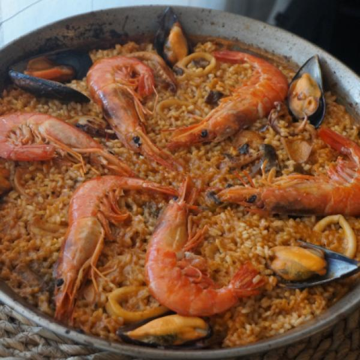

Paella

Description
Of Valencian origin, Paella has become an icon of Spain. Although there are many ways to prepare it, the truth is
that all its presentations are delicious. For this to be the case, the key to a good paella often lies in the
use of the correct techniques and ingredients. For this reason, at Odin Recipes we are going to teach you step
by step how to make easy seafood paella so that you can enjoy the flavors of the sea from the comfort of your
home.
Ingredients
- 400 g of bomba rica
- 1 cuttlefish or squid
- 12 mussels
- 1 green pepper
- 2 garlic cloves
- 2 tablespoons crushed tomato or fresh tomato
- 1.4 liters of fish broth
- 4 strands of saffron
- 1 dessert spoon of coloring
- 1 dessert spoon of sweet paprika
- 1 jet of oil
- 1 pinch of salt
Steps
- Wash the mussels, cut the green pepper and chop the garlic. Also, clean and cut the squid.
- Put a paella on the fire with a good jet of oil. Sauté the prawns and squid or cuttlefish over high heat. Take out the prawns and reserve them.
- Set the squid and cuttlefish aside. If necessary, add a little more oil and add the green pepper. Let cook for 3-4 minutes and add the minced garlic. Stir so that the garlic does not burn and, before it takes on color, add the tomato. Stir and let cook a few more minutes.
- Add the mussels so that they open up. You can also pour a ladle of broth. Add the teaspoon of sweet paprika and the saffron threads. You can make a homemade fish broth by visiting our fish broth recipe.
- Add the rice, stir everything so that the rice is impregnated with the flavor of all the ingredients.
- Add the rest of the broth (previously heated), taste for salt and correct if necessary. Add the coloring and let the paella cook for about 15-18 minutes or until the rice is ready.
- 5 minutes before the rice is ready, top with the prawns and finish cooking the rice. Let the seafood paella rest for about 5 or 10 minutes.
- The paella is ready to eat!